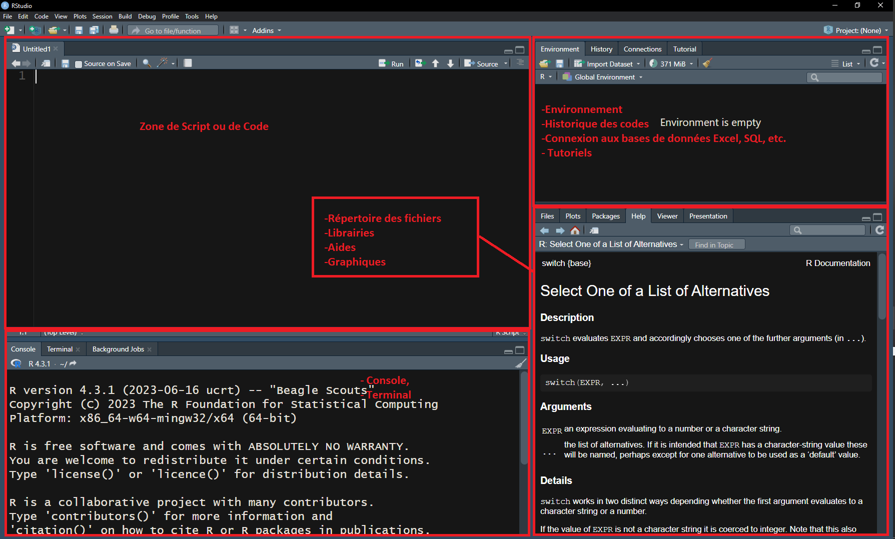

1+1 # addition [1] 2Dans ce module, nous allons parcourir les fondamentaux avec R à savoir: -Les notions de base dans R: operation, vecteur, dataframe, list. -Les fonctions prédéfinies dans la librairie de base R; -Introduction à la programmation dans R: structures conditionnelles, et les itérations, if, for, while, repeat - L’importation des fichiers de différents types: txt, xlsx, csv. - L’écriture des fichiers, en format rdata, rds, txt, xlsx, csv.
R est un logiciel libre destiné aux calculs statistiques et graphiques du CRAN: Installer R à partir de Comprehensive R Archive Network.
RStudio est un EDI (Environnement Intégré de Développement) adéquat pour R: Installer RStudio à partir du site posit.
Vous pouvez trouver comme alternatif à l’installation de R, des plateformes en ligne, parmi lesquels se trouvent:
R et Rstudio.R, puis RstudioAu démarrage de Rstudio, vous verrez s’afficher la fenêtre ci-après.

Les fenêtres: Console, Environnemnt, Script et help vont s’ouvrir par défaut.
Dans la console se comporte comme une calculatrice:
1+1 # addition [1] 2L’extension d’un script R est .R, et fichier de données R est .RDATA
Pour avoir de l’aide pour une fonction ou une commande dans R : ?? ou encore help.search(), par exemple help.search(sum)
| Opération d’assignation | Signification |
|---|---|
<- ou encore (=) |
Opération d’affection |
& |
ET |
| |
OU |
+, -, *,/ |
Addition, soustraction, multiplication, division |
| >=, <=, !=, == | Supérieur ou égal, inférieur ou égal, différent, égal |
$ , [[]] |
Sélecteur de colonne dans un data.frame |
# |
Commentaire |
Nous pouvons utilser la majeur partie de ces opérations sur les formats suivants: - Numérque (numeric) - Entier (integer) - Complexe - Logique (logic) - caractère (string)
ecole<-10
classe_par_ecole<-15
total_classe<- ecole*classe_par_ecole
print(total_classe)[1] 150(ratio_ecole_classe<-ecole/classe_par_ecole)[1] 0.6666667Le nom des variables dans R ne peuvent pas contenir les signes. Elles doivent commencer par les lettres de l’alphabet
R contient les fonctions pédéfinies, par exemples:
print(), cat(): sont des fonctions d’imprission.getwd(): permet d’obtenir le répertoire de travailsetwd(): permet de définir le répertoire de travaills(): permet d’afficher la liste des objetsrm(): permet de supprimer les objets dans l’espace de travail.sum(): somme, min(): minimum, max(): maximum, var(): variance, sd(): Ecart type.rnorm(), runif(), sample()sin(), cos()summary(): pour décrire une variable.En entrant ? suivi de la fonction recherchée, vous pouvez avoir de l’aide sur cette fonction.
Vous pouvez utiliser library(help="base") Pour voir la liste des fonctions qui sont prédéfines dans la version de base de R.
Exemple
theta<-0.5*pi*rnorm(100)
r<-2
x<-r*cos(theta)
y<-r*sin(theta)Description de x
summary(x) Min. 1st Qu. Median Mean 3rd Qu. Max.
-1.9928 -0.3166 1.0965 0.6161 1.7445 1.9999 Description de y
summary(y) Min. 1st Qu. Median Mean 3rd Qu. Max.
-1.998800 -1.377310 -0.115498 -0.004226 1.433709 1.993422 Liste des objets dans l’environnement
ls()[1] "classe_par_ecole" "ecole" "has_annotations"
[4] "r" "ratio_ecole_classe" "theta"
[7] "total_classe" "x" "y" Les principaux objets de Rqui sont manipulables sont:
Pour créer un vecteur dans R, vous pouvez utiliser la fonction c() Par exemple un vecteur numérique
x<-c(1,2,3,8,10)
print(x)[1] 1 2 3 8 10Un vecteur de caractères
y<-c("Toto","Ecole","Classe","Maison")
print(y)[1] "Toto" "Ecole" "Classe" "Maison"Un vecteur logique
z<-c(T, F, T, F,F,T)
print(z)[1] TRUE FALSE TRUE FALSE FALSE TRUEOn peut convertir un vecteur logique en format numérique: as.numeric()
w<-as.numeric(z)
print(w)[1] 1 0 1 0 0 1Il n’est pas possible d’associer un format numerique et un format caractère. Tout le contenu prendra le format caractère.
t<-c("Classe", 1, "Toto", 3,8)
print(t)[1] "Classe" "1" "Toto" "3" "8" Par contre on peut convertir un vecteur numérique en caractère: as.character().
u<-as.character(x)
print(u)[1] "1" "2" "3" "8" "10"Une matrice dans R se crée avec avec la fonction matrix() en précisant le nombre des colonnes et le nombre des lignes, les données.
set.seed(100)
m<-matrix(rnorm(100), ncol=5, nrow=20)
head(m, 4) [,1] [,2] [,3] [,4] [,5]
[1,] -0.50219235 -0.4380900 -0.1016292 -0.26199577 0.89682227
[2,] 0.13153117 0.7640606 1.4032035 -0.06884403 -0.04999577
[3,] -0.07891709 0.2619613 -1.7767756 -0.37888356 -1.34534931
[4,] 0.88678481 0.7734046 0.6228674 2.58195893 -1.93121153On peut créer des matrices de caractères
x<-sample(letters, 100, replace=T)
mc<-matrix(x, ncol=5, nrow=20)
head(mc, 4) [,1] [,2] [,3] [,4] [,5]
[1,] "r" "z" "g" "e" "x"
[2,] "a" "j" "n" "t" "k"
[3,] "g" "t" "e" "w" "k"
[4,] "j" "o" "l" "h" "s" Pour extraire des élements de la matrice, il suffit de préciser les indices lignes (i) et colonnes j: m[i,j]
m[1,2][1] -0.43809m[1:3, 1:5] [,1] [,2] [,3] [,4] [,5]
[1,] -0.50219235 -0.4380900 -0.1016292 -0.26199577 0.89682227
[2,] 0.13153117 0.7640606 1.4032035 -0.06884403 -0.04999577
[3,] -0.07891709 0.2619613 -1.7767756 -0.37888356 -1.34534931On peut assigner les noms aux lignes et aux colonnes en utilisant row.names() et colnames()
row.names(m)<-paste("r", 1:nrow(m),sep=".")
colnames(m)<-paste("c", 1:ncol(m), sep=".")
m["r.1", "c.1"][1] -0.5021924Les fonctions rbind() et cbind() peuvent aussi servir à créer une matrice. Elles permettent de combiner les vecteurs par ligne (rbind()) ou par colonne (cbind()).
Pour utiliser les fonctions rbind() et cbind(). Il faut s’assurer que les vecteurs soient de même dimension.
v1<-runif(5)
v2<-rnorm(5)
(m1<-cbind(v1, v2)) v1 v2
[1,] 0.6179082 -0.242269499
[2,] 0.6041435 0.059031382
[3,] 0.7858796 -0.177271868
[4,] 0.5552685 0.794680268
[5,] 0.7689783 0.006737787(m2<-rbind(v1, v2)) [,1] [,2] [,3] [,4] [,5]
v1 0.6179082 0.60414349 0.7858796 0.5552685 0.768978339
v2 -0.2422695 0.05903138 -0.1772719 0.7946803 0.006737787| Opération matricielle | Signification |
* |
Multiplication élément par élément |
%*% |
Multiplication matricielle |
t() |
Transposition de matrice |
det() |
déterminant d’une matrice |
solve() |
Inverse d’une matrice |
Les listes sont beaucoup utilisés dans R, et sont vraiment pratiques. Pour créer une liste on utilise la fonction list().
y<-list(1,2)
y[[1]]
[1] 1
[[2]]
[1] 2On peut aussi imbriquer les listes
y<-list(1, list(T, list(c(1:4))))
y[[1]]
[1] 1
[[2]]
[[2]][[1]]
[1] TRUE
[[2]][[2]]
[[2]][[2]][[1]]
[1] 1 2 3 4On utilise [], [[]] ou $ pour extraire les élements d’une liste
y[1]; y[[2]][[1]][[1]]
[1] 1[1] TRUEL”objet dataframe un type de table ayant des colonnes et des lignes. À la différence d’une matrice, un dataframe peut contenir à la fois des plusieurs types de données. Pour créer un dataframe on utile la fonction data.frame() en précisant le nom des variables.
set.seed(100)
head(Produits<-data.frame(ID=1:100, Categories=sample(LETTERS, 100, replace = T), Pays=sample(c("Chine","Inde","USA","Canada","Togo","Cameroun"), 100, replace=T),Prix=runif(100)*100,Quantite=runif(100, min=1, max=100)),3) ID Categories Pays Prix Quantite
1 1 J Canada 61.71091 98.509405
2 2 W Chine 79.13045 3.111743
3 3 F Inde 33.80487 11.646358Produits[["Pays"]] [1] "Canada" "Chine" "Inde" "USA" "USA" "USA"
[7] "Inde" "Inde" "Chine" "Cameroun" "Togo" "Cameroun"
[13] "USA" "Inde" "USA" "Inde" "USA" "Canada"
[19] "Inde" "Togo" "Cameroun" "Chine" "Canada" "Cameroun"
[25] "Cameroun" "Inde" "USA" "Cameroun" "Inde" "Cameroun"
[31] "USA" "USA" "Canada" "Chine" "Inde" "Cameroun"
[37] "Inde" "Canada" "Canada" "Togo" "Canada" "Togo"
[43] "Inde" "Canada" "Canada" "Chine" "Inde" "USA"
[49] "Cameroun" "Togo" "Chine" "Canada" "Chine" "Inde"
[55] "Inde" "Togo" "Cameroun" "Inde" "Chine" "Inde"
[61] "Chine" "Canada" "Inde" "USA" "Cameroun" "Inde"
[67] "Chine" "Inde" "Chine" "Togo" "Chine" "Togo"
[73] "Cameroun" "USA" "Canada" "Inde" "Cameroun" "Inde"
[79] "Inde" "Canada" "Canada" "Inde" "Togo" "Inde"
[85] "Cameroun" "Cameroun" "Chine" "Togo" "Canada" "USA"
[91] "Togo" "Cameroun" "Canada" "Cameroun" "Togo" "Canada"
[97] "Cameroun" "Chine" "Togo" "Canada" Produits[["Valeur"]]<-Produits[["Prix"]]*Produits[["Quantite"]]
head(Produits) ID Categories Pays Prix Quantite Valeur
1 1 J Canada 61.71091 98.509405 6079.1052
2 2 W Chine 79.13045 3.111743 246.2336
3 3 F Inde 33.80487 11.646358 393.7036
4 4 P USA 90.54476 25.237856 2285.1556
5 5 S USA 19.75567 72.513878 1432.5603
6 6 Y USA 79.40852 4.240759 336.7524row.names(Produits) [1] "1" "2" "3" "4" "5" "6" "7" "8" "9" "10" "11" "12"
[13] "13" "14" "15" "16" "17" "18" "19" "20" "21" "22" "23" "24"
[25] "25" "26" "27" "28" "29" "30" "31" "32" "33" "34" "35" "36"
[37] "37" "38" "39" "40" "41" "42" "43" "44" "45" "46" "47" "48"
[49] "49" "50" "51" "52" "53" "54" "55" "56" "57" "58" "59" "60"
[61] "61" "62" "63" "64" "65" "66" "67" "68" "69" "70" "71" "72"
[73] "73" "74" "75" "76" "77" "78" "79" "80" "81" "82" "83" "84"
[85] "85" "86" "87" "88" "89" "90" "91" "92" "93" "94" "95" "96"
[97] "97" "98" "99" "100"colnames(Produits)[1] "ID" "Categories" "Pays" "Prix" "Quantite"
[6] "Valeur" colnames(Produits)[2]<-"Pays de production"
colnames(Produits)[1] "ID" "Pays de production" "Pays"
[4] "Prix" "Quantite" "Valeur" attach() ou detach() La fonction attach() appliquée à un dataframe permet de rendre visible les variables du dataframeattach(Produits)summary(Prix); summary(Valeur) Min. 1st Qu. Median Mean 3rd Qu. Max.
1.632 33.627 54.632 53.707 74.508 99.601 Min. 1st Qu. Median Mean 3rd Qu. Max.
56.1 987.8 2138.8 2740.3 4036.4 9204.4 La fonction detach() appliquée à un dataframe supprime la visibilité des variables.
detach(Produits)